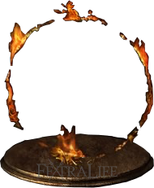
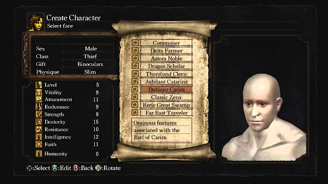
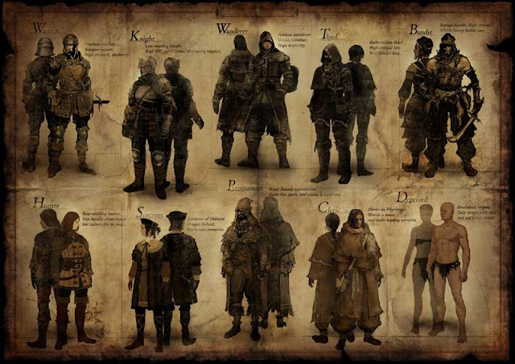
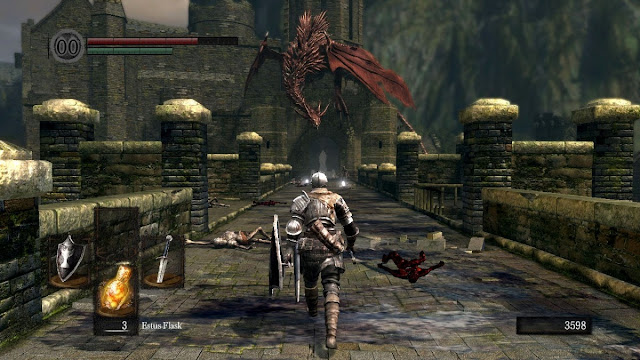

Página Inicial
Ficha Técnica
Nome: Dark Souls
Criador: Hidetaka Myazaki
Desenvolvedora: FromSoftware
Publicadora: Bandai Game Studios
Lançamento: 22 de setembro de 2011
Dark Souls, uma Trilogia de jogos muito aclamada pela crítica inicialmente lançada no começo da década passada foi um jogo que popularizou rapidamente na indústria dos jogos, trazendo a tona um novo genêro intitulado de "souls" cujo o foco na maior parte em sua "dificuldade".
A HISTÓRIA E O COMEÇO DO JOGO
``Na era dos antigos o mundo era sem forma e envolto por nevoeiro. Uma terra de penhascos cinzas, árvores gigantes e dragões primordiais. Mas então, houve fogo, e com o fogo, houve disparidade. Calor e frio, vida e morte, e claro, luz e escuridão. Logo, das trevas, eles vieram, e encontraram as almas dos lordes no interior da chama. Nito, o primeiro dos mortos. A bruxa de Izalith e as suas filhas do caos. Gwyn, o senhor da luz solar e seus fiéis cavaleiros. E o furtivo Pigmeu, tão facilmente esquecido. Com a força dos lordes, eles desafiaram os dragões. Gwyn e seus poderosos raios, despedaçaram suas escamas de pedra, as bruxas teciam grandes tempestades de fogo, Nito desencadeou uma miasma de doença e morte, e Seath, o descamado, traiu a sua própria espécie, e assim sendo, os dragões não existiam mais, e assim iniciou a era do fogo. Mas em breve, as chamas irão desaparecer, e restarão somente as trevas. E mesmo agora, existem apenas brasas, e os homens não vêem a luz, mas apenas intermináveis noites. E entre os vivos são vistos como os portadores da amaldiçoada marca negra.´´
E aí, o que você conseguiu entender nisso? Lendo assim não é muito difícil de entender, certo? E realmente não é mesmo, mas isso aí é apenas a introdução do game, justamente para te integrar neste fantástico universo. Quando o jogo realmente começa fih, aí é que a giripoca vai piar, mas eu vou dar uma ajuda pra você que nunca jogou Dark Souls, ou já jogou mas não entendeu bosta nenhuma. Após a derrota dos dragões iniciou a era do fogo, que seria uma era de prosperidade. Porém, a chama da vida começou a se extinguir e isso gerou a maldição dos mortos vivos, onde muitos seres humanos foram amaldiçoados por uma marca negra na qual os impedem de serem mortos por definitivo. Sempre que um humano morre, ele retornaria como um morto-vivo, quase como um zumbi, ou seja, eles não podem serem mortos definitivamente. Então, num belo dia, um morto-vivo especial é escolhido para pôr um fim a essa maldição. Para isso, ele terá de ir até a capital abandonada dos deuses, Anor Londo, e fazer o que tem que fazer, e esse morto-vivo (ou undead) especial é você, meu caro jogador. Primeiro de tudo, você vai fazer o seu personagem (já irei comentar sobre isso, aguenta aí), depois, você inicia o seu jogo e no momento você apenas foca em fugir do asilo, onde você se encontra no momento. Depois de uns 15, 20 minutos de gameplay, você finalmente chega num local chamado Altar do Elo do fogo (ou Firelink Shrine). Lá, tem uma fogueira (e será explicada daqui a pouco também) e a alguns metros dela, há um npc sentado. Conversando com ele, é dito que você não deveria retornar para esta terra amaldiçoada de Lordran (local onde o jogo se passa) e que seria melhor você ter ficado lá, mas já que você já estava ali e que era tarde demais para recuar, ele decide te dar uma mãozinha. Ele apenas diz o seguinte: ``Há dois sinos, um está localizado no alto da torre da paróquia dos mortos vivos, e o outro está localizado logo abaixo, após a cidade das moléstias. Soe os dois sinos e algo acontecerá, incrível, não?´´. É isso mesmo, o cara só diz que vai acontecer algo e não especifica o que exatamente, você tem que descobrir sozinho. E aí você começa verdadeiramente o jogo. Há mais detalhes da história a serem ditos, mas vou deixando pra falar no decorrer do post. Dark Souls possui um universo incrível, mas que é limitado apenas a diálogos dos npc's e algumas anotações. Não que isso seja um problema, é claro que não, isso é bom, pois incentiva o jogador a trabalhar a sua mente para entender a história, até porque isso é proposital.
SISTEMA DE CRIAÇÃO

antes do jogo ser iniciado você vai montar seu personagem para se preparar para sua jornada.
Você vai escolher o seu nome, o sexo, a classe, a dádiva, ou presente, e o seu porte físico, incluindo rosto e corpo. Você vai passar pelo menos meia hora montando seu personagem, acredite, e se você tentar fazer um personagem bonito, você vai ter dificuldades, porque todo mundo é feio nessa bagaça, exceto uma certa peituda lá em Anor Londo.
Dentre as classes nós temos: Guerreiro, cavaleiro, andarilho, caçador, ladrão, bandido, feitiçeiro, piromante, clérigo e vagabundo. A escolha da sua classe vai governar os seus atributos (como força, resistência e etc...), porém, você não vai precisar se manter nessa classe o jogo inteiro, você pode por exemplo, escolher ser um cavaleiro mas acabar se tornando feitiçeiro depois, tudo vai depender em quais atributos você vai investir e os equipamentos que serão usados. A escolha da sua classe é apenas para te dar uma ajuda no começo do jogo, depois tu pode ser a porra que você quiser, ou tudo junto. O sistema de upgrade vou explicar mais pra frente do post. Agora, uma explicaçãozinha rápida em cada classe: Guerreiro foca em força física, permitindo usar armas mais fortes logo no início do game. Cavaleiro seria parecido com guerreiro, mas é mais balanceado, usa uma armadura forte, tem alto HP e é difícil de ser derrubado. Andarilho seria um guerreiro só que mais ágil, mais rápido e usam cimitarras (espadas ágeis). Caçador são os arqueiros da parada, brincam de dar flechinhas nos outros. São ótimos com arco, mas péssimos com magia. O ladrão é aquele cara que vai roubar seu Iphone 6s ou seu samsung Galaxy J7 e ainda vai dar piruetas pra trás e te atacando por locais proibidos também, fora que ele usa uma faquinha, que é ótima para danos críticos, e tem uma chave-mestra, ou seja, ele pode aparecer na sua casa a noite. O Bandido vai roubar teu celular e ainda vai querer te matar com um fudendo machado robusto. O Feitiçeiro é a melhor classe pra longa distância com magia, ele usa um cajado e conjura magias de almas aprendidas na escola draconiana de Vinheim. O Piromante é o charmander da parada, ele usa magias de fogo, vieram do pântano do Shrek e usam um machado de lenhador. O Clérigo é tipo aquele padre chato da sua igreja, ele aplica os dízimos feitiços milagrosos, como cura e reforço. Eles usam uma maça também. E por último, depravados, ou vagabundos, eles não tem NADA de especial, são uns bostas, acham que estão na idade da pedra ainda e, portanto, usam um porrete, um escudo de madeira grossa e uma canguinha na cintura apenas. A vantagem dessa classe é que todos os atributos estão no nível 11, então fica bem flexível, e é uma classe para aqueles que se consideram fodões em Dark Souls e querem algo ainda mais desafiador.
como eu disse lá em cima, se você quiser iniciar o jogo como, sei lá, piromante, e depois se tornar um feiticeiro, você pode, mas vai exigir mais dedicação e, portanto, será mais difícil e trabalhoso. Ah, mais um detalhe: Você pode escolher a sua dádiva também, ou presente, que é um item especial para lhe auxiliar no começo da sua jornada, realmente um presente mesmo: Por exemplo, bomba incendiária negra (que é mais forte que a comum), chave-mestra e etc...
Gameplay
Como o jogo funciona? A câmera é em terceira pessoa, podendo ser controlada livremente pelo jogador, e a mira pode ser travada automaticamente no alvo, mas é possível configurar este recurso. Você pode equipar armas de mão direita e mão esquerda. Você pode equipar duas em cada mão, podendo alterná-las com os direcionais de esquerda e direita. Normalmente, usa-se os escudos na mão esquerda e as armas brancas na direita. É possível equipar em mãos trocadas também, mas não terão a mesma eficácia. Também pode equipar seis itens de consumo, ou seja, são aqueles itens consumíveis, como poções de cura (que aqui são chamados de Frascos de Estus), bombas de fogo, facas de arremesso e etc. No canto inferior esquerdo da tela, tem 4 quadradinhos que mostram os itens nos quais estamos usando no momento, no da direita, arma de mão direita, no da esquerda, arma de mão esquerda, no de baixo, itens consumíveis, e no de cima, a magia equipada (pode-se aumentar o número de magias que podemos carregar). No canto superior esquerdo da tela, nós temos nossa barra de HP, estamina e dois dígitos que contam quantas humanidades nós temos. No canto inferior direito, mostra a quantidade de souls (ou almas) que temos, e elas têm muitas utilidades, nas quais explicarei daqui a pouco.Veja abaixo a imagem ilustrando tudo que falei.
REGRA BÁSICA DOS RPG'S: Se o jogo se passa na idade média, é certo que vai ter dragões.
Daqui pra frente a jornada eu vou deixar por sua conta.
Boa sorte, Undead